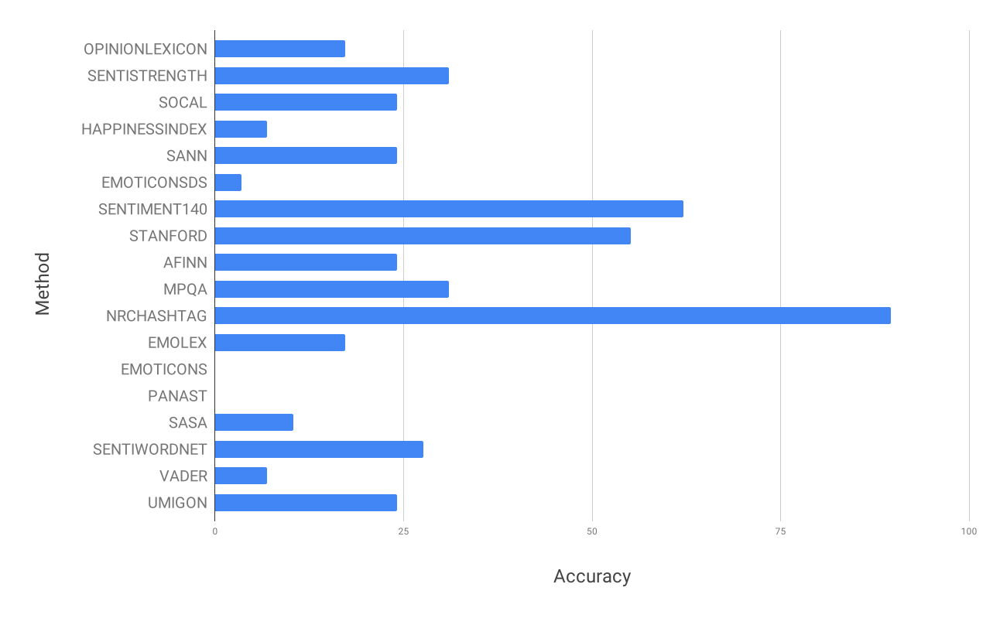
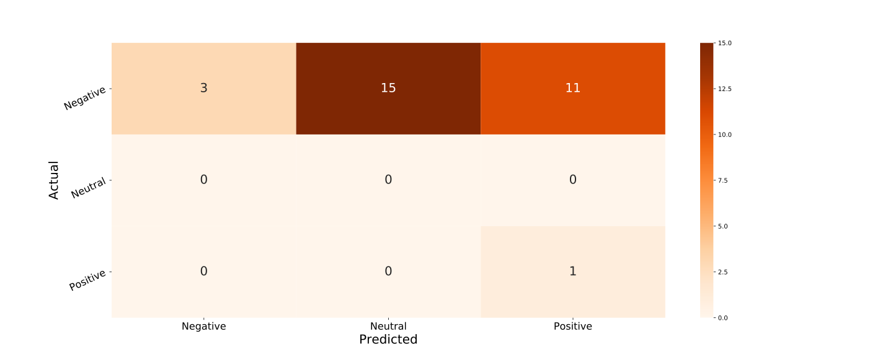

Linkflows
A new model for scientific publishing at a granular level
Cristina-Iulia Bucur
3rd June 2019 @ WAI Meeting
Scientific publishing: still in the Middle Ages?
- Initial paradigm of publishing: the same!
- Article PDFs: coarse-grained structures in which scientific contributions are communicated
- Measure of quality: reviewing
How to keep up?
- It takes time to publish! even ~ 1 year
- It takes time to stay up to date!
- ~22 hours/week for epidemiologists (2004)
- 2000 papers/day in PubMed (2018)

Research question
Can a fine-grained model of the scientific publishing workflow help us make reviewing processes more efficient and more accurate?Fine-grained reviewing

Ontologies used
- PROV-O: Provenance Ontology
- SPAR suite: ontologies for the publishing domain
- FAIR*reviews ontology
- Web Annotation Data Model
- and others...
Linkflows model in a nutshell
- Actors: authors, peer-reviewers, editors, other
- Target: root, intermediary, leaf
- Aspect: syntax, style, content
- Impact: 1 to 5
- Action type: suggestion, no_action_needed, needs_to_be_addressed
- Sentiment: positive, balanced/neutral, negative
- Action: add, remove, modify
- Reply: agree, dismiss, ignore
- Response: addressed, not_addressed, partially_addressed

Linkflows model evaluation
- Granular reviews address snippets of text
- The chain of changes that one or more reviews launched
- Sentiment of a review: positive, neutral, negative
- "Ground truth": peer-review rating of own written review
- Use crowd/experts to see if reviews were addressed
Datasets
| Data Science Journal | Semantic Web Journal | PeerJ CS Journal | Openreview.net | ||||||
|---|---|---|---|---|---|---|---|---|---|
| ISWC-DeSemWeb | ISMIR-WoRMS | ||||||||
| Total | Excluded | Total | Selected | Total | Excluded | Total | Not accepted | Total | Excluded |
| 13 | 4 | 38 | 10 | 26 | 15 | 10 | 2 | 11 | 1 |


Accuracy of Sentiment Analysis Methods
Sentiment Analysis: Confusion Matrix
Future work
- Finish conducting experiments
- Refine model
- Build interface(s)
- Write it all up!!!